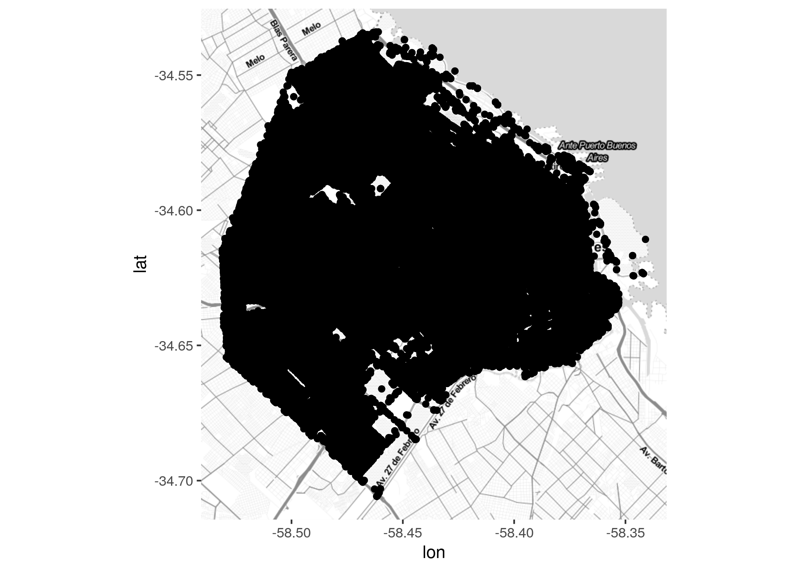
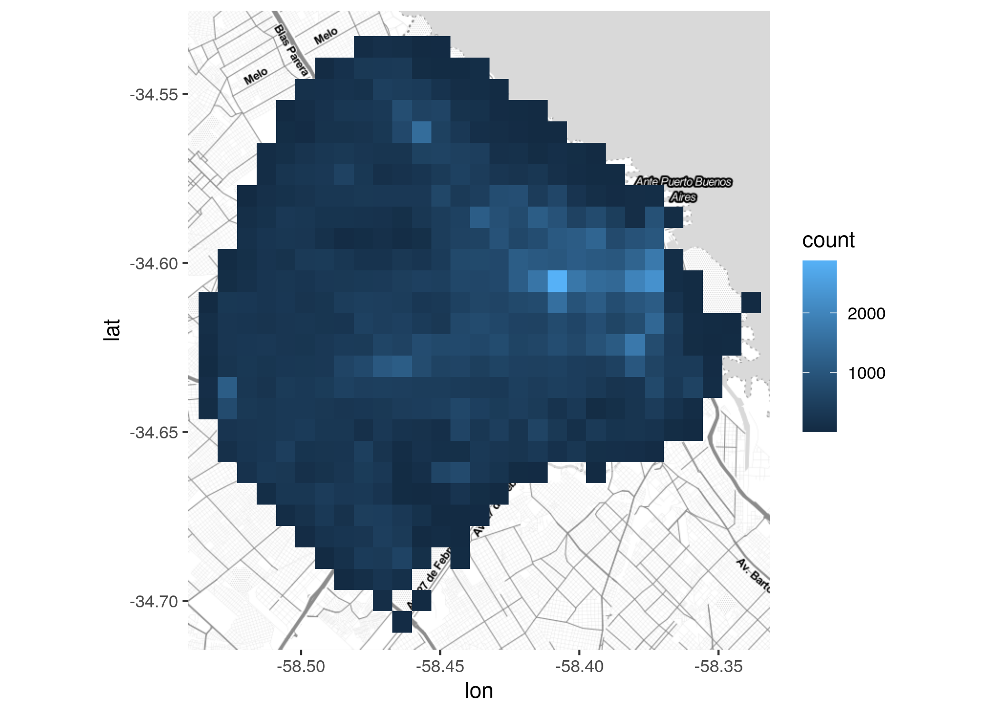
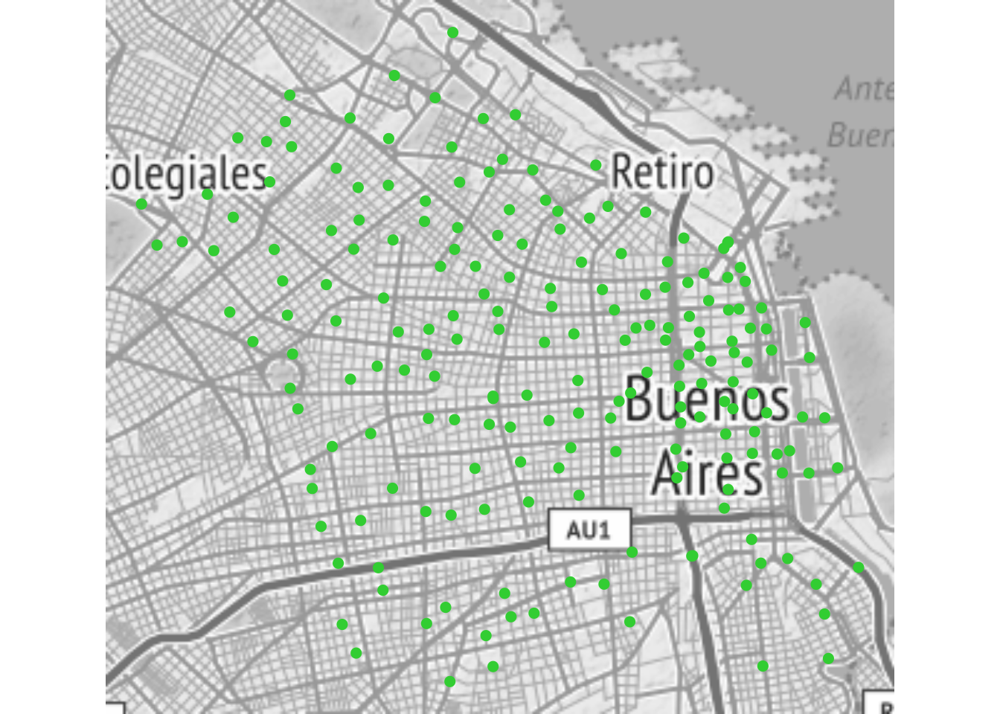

Capítulo 6 Machine Learning (en una aplicación urbana)
El asíi llamado machine learning consiste el empleo de aprendizaje estadístico automatizado para identificar patrones en grandes volúmenes de datos. El machine learning (de aquí en más ML) es utilizado en infinidad de campos debido a su creciente facilidad de uso y capacidad -en ciertos contextos- para predecir resultados con alta precisión.
Veremos como se aplica en la práctica con un ejercicio adaptado del tutorial realizado por Cam Nugent. Utiliza como fuente datos un dataset que contiene el valor mediano de las viviendas en California, EEUU, de acuerdo a un censo de 1990. ¡Es casi información arqueológica!

Habitantes de California en los ’90 con sus vestimentas nativas
A pesar de no contener datos de factura reciente, el dataset ha aparecido en varios textos introductorios debido a que no contiene información sensible, es de dominio público, y sus variables son auto-explicativas. Además, su tamaño resulta adecuado: suficiente para no ser considerado “de juguete”, pero no tan grande como para ser engorroso.
Cada fila representa un conjunto de manzanas, o “Census block groups”. Por comodidad, nosotros les llamaremos distritos. El objetivo del ejercicio es predecir el valor medio de las viviendas de cada distrito en función de sus otros atributos conocidos: cuánta gente vive allí, donde esta localizado, si queda cerca del mar, la antigüedad de sus casas, etc.
Allá vamos.
6.1 Paso 0: Cargar paquetes
Además de las funciones de R “base”, vamos a usar las del paquete tidyverse para procesar y visualizar nuestros datos, y las de randomForest, para aplicar el algoritmo de ML homónimo, que es relativamente simple y a la vez efectivo.
6.2 Paso 1: Cargar los datos
Descargamos el dataset del siguiente modo:
6.3 Paso 2: Examinar los datos
Echamos un vistazo a las primeras filas,
## # A tibble: 6 x 10
## longitud latitud mediana_antigue… total_habitacio… total_dormitori… poblacion
## <dbl> <dbl> <dbl> <dbl> <dbl> <dbl>
## 1 -122. 37.9 41 880 129 322
## 2 -122. 37.9 21 7099 1106 2401
## 3 -122. 37.8 52 1467 190 496
## 4 -122. 37.8 52 1274 235 558
## 5 -122. 37.8 52 1627 280 565
## 6 -122. 37.8 52 919 213 413
## # … with 4 more variables: hogares <dbl>, mediana_ingresos <dbl>,
## # mediana_valor_vivienda <dbl>, proximidad_oceano <chr>Y extraemos un resumen del contenido
## longitud latitud mediana_antiguedad_viviendas
## Min. :-124.3 Min. :32.54 Min. : 1.00
## 1st Qu.:-121.8 1st Qu.:33.93 1st Qu.:18.00
## Median :-118.5 Median :34.26 Median :29.00
## Mean :-119.6 Mean :35.63 Mean :28.64
## 3rd Qu.:-118.0 3rd Qu.:37.71 3rd Qu.:37.00
## Max. :-114.3 Max. :41.95 Max. :52.00
##
## total_habitaciones total_dormitorios poblacion hogares
## Min. : 2 Min. : 1.0 Min. : 3 Min. : 1.0
## 1st Qu.: 1448 1st Qu.: 296.0 1st Qu.: 787 1st Qu.: 280.0
## Median : 2127 Median : 435.0 Median : 1166 Median : 409.0
## Mean : 2636 Mean : 537.9 Mean : 1425 Mean : 499.5
## 3rd Qu.: 3148 3rd Qu.: 647.0 3rd Qu.: 1725 3rd Qu.: 605.0
## Max. :39320 Max. :6445.0 Max. :35682 Max. :6082.0
## NA's :207
## mediana_ingresos mediana_valor_vivienda proximidad_oceano
## Min. : 0.4999 Min. : 14999 Length:20640
## 1st Qu.: 2.5634 1st Qu.:119600 Class :character
## Median : 3.5348 Median :179700 Mode :character
## Mean : 3.8707 Mean :206856
## 3rd Qu.: 4.7432 3rd Qu.:264725
## Max. :15.0001 Max. :500001
## Obsérvese que la variable “total_dormitorios” exhibe 207 datos faltantes, representados con NA. Luego volveremos a éste tema.
Y espiemos la distribución de algunas variables, como
ingresos:
antigüedad de las viviendas:

población:
… o proximidad al océano (dado que se trata de una variable categórica en lugar de continua, usamos un gráfico de barras en lugar de un histograma):

6.4 Paso 3: Limpiar los datos
6.4.1 Imputar valores faltantes
Es habitual que los algoritmos empleados para ML no acepten datos faltantes. Es por eso que la limpieza básica de un dataset casi siempre incluye la imputación de datos no disponibles, evitando descartar por incompletas filas que contienen información valiosa en sus campos si disponibles.
Habíamos notado que la variable “total_dormitorios” tiene faltantes en 207 filas. Para esos casos, usaremos una de las técnicas de imputación mas naif que hay: donde haya un valor desconocido, lo reemplazaremos por la mediana de los valores generales.
vivienda <- vivienda %>%
mutate(total_dormitorios = ifelse(is.na(total_dormitorios),
median(total_dormitorios, na.rm = TRUE),
total_dormitorios))
summary(vivienda)## longitud latitud mediana_antiguedad_viviendas
## Min. :-124.3 Min. :32.54 Min. : 1.00
## 1st Qu.:-121.8 1st Qu.:33.93 1st Qu.:18.00
## Median :-118.5 Median :34.26 Median :29.00
## Mean :-119.6 Mean :35.63 Mean :28.64
## 3rd Qu.:-118.0 3rd Qu.:37.71 3rd Qu.:37.00
## Max. :-114.3 Max. :41.95 Max. :52.00
## total_habitaciones total_dormitorios poblacion hogares
## Min. : 2 Min. : 1.0 Min. : 3 Min. : 1.0
## 1st Qu.: 1448 1st Qu.: 297.0 1st Qu.: 787 1st Qu.: 280.0
## Median : 2127 Median : 435.0 Median : 1166 Median : 409.0
## Mean : 2636 Mean : 536.8 Mean : 1425 Mean : 499.5
## 3rd Qu.: 3148 3rd Qu.: 643.2 3rd Qu.: 1725 3rd Qu.: 605.0
## Max. :39320 Max. :6445.0 Max. :35682 Max. :6082.0
## mediana_ingresos mediana_valor_vivienda proximidad_oceano
## Min. : 0.4999 Min. : 14999 Length:20640
## 1st Qu.: 2.5634 1st Qu.:119600 Class :character
## Median : 3.5348 Median :179700 Mode :character
## Mean : 3.8707 Mean :206856
## 3rd Qu.: 4.7432 3rd Qu.:264725
## Max. :15.0001 Max. :500001Nos hemos librado de los NA.
6.4.2 Normalizar variables
También deberíamos evaluar si algunas variables requieren ser normalizadas. En este caso las candidatas son “total_habitaciones” y “total_dormitorios”, ya que es de esperarse que sean mayores donde hay más casas -naturalmente- pero eso no nos indica si las casas tienden a ser más o menos grandes que la media. Lo que haremos entonces es dividir la cantidad total de habitaciones por la cantidad de viviendas en cada distrito, y nos quedaremos con esas métricas en lugar de las originales:
vivienda <- vivienda %>%
mutate(promedio_habitaciones = total_habitaciones/hogares,
promedio_dormitorios = total_dormitorios/hogares) %>%
select(-total_habitaciones, -total_dormitorios)
head(vivienda)## # A tibble: 6 x 10
## longitud latitud mediana_antigue… poblacion hogares mediana_ingresos
## <dbl> <dbl> <dbl> <dbl> <dbl> <dbl>
## 1 -122. 37.9 41 322 126 8.33
## 2 -122. 37.9 21 2401 1138 8.30
## 3 -122. 37.8 52 496 177 7.26
## 4 -122. 37.8 52 558 219 5.64
## 5 -122. 37.8 52 565 259 3.85
## 6 -122. 37.8 52 413 193 4.04
## # … with 4 more variables: mediana_valor_vivienda <dbl>,
## # proximidad_oceano <chr>, promedio_habitaciones <dbl>,
## # promedio_dormitorios <dbl>Del mismo modo sería mejor tener densidad de población en lugar de población total, pero sin saber el área que ocupa cada distrito no vamos a poder obtener la densidad.
6.4.3 Codificar variables categóricas
Ahora nos encargaremos de las variables categóricas, aquí representadas por “proximidad_oceano”. Rara vez es posible utilizar columnas categóricas en modelos estadísticos, pero por suerte podemos recurrir a la alternativa de reemplazar una columna de datos categóricos por una serie de variables binarias, o “dummy”.
Es decir, en lugar de…
| caso | proximidad_oceano |
|---|---|
| A | CERCANO A BAHIA |
| B | ALEJADO DEL OCEANO |
| C | CERCANO A OCEANO |
… tendríamos algo así como:
| caso | CERCANO A BAHIA | ALEJADO DEL OCEANO | ALEJADO DEL OCEANO |
|---|---|---|---|
| A | 1 | 0 | 0 |
| B | 0 | 1 | 0 |
| C | 0 | 0 | 1 |
Como buen lenguaje creado por y para practicantes del análisis estadístico, R trae una función específica para realizar ésta tarea, model.matrix(). Se usa así:
y el resultado es, ni más ni menos, una matriz de variables binarias que representan las categorías originales:
## proximidad_oceanoALEJADO_DEL_OCEANO proximidad_oceanoCERCANO_A_BAHIA
## 1 0 1
## 2 0 1
## 3 0 1
## 4 0 1
## 5 0 1
## 6 0 1
## proximidad_oceanoCERCANO_A_OCEANO proximidad_oceanoISLA
## 1 0 0
## 2 0 0
## 3 0 0
## 4 0 0
## 5 0 0
## 6 0 0
## proximidad_oceanoMENOS_1H_VIAJE
## 1 0
## 2 0
## 3 0
## 4 0
## 5 0
## 6 0Pronto agregaremos la matriz a nuestro dataframe, pero antes terminemos con otros ajustes pendientes.
6.4.4 Unificar la escala de las variables numéricas
Éste paso siempre es necesario cuando estamos trabajando con variables que utilizan distintas unidades de medida. Aquí tenemos personas, hogares, habitaciones, dormitorios, años de antigüedad… de todo. Muchos algoritmos asumen que todas las variables tienen escalas comparables, lo cual genera problemas con las que alcanzan valores relativamente muy altos (como población, que llegar a decenas de miles) versus las que tienen rangos mucho menores (como antigüedad en años mediana, que “sólo” llega a 52). Si las dejásemos así, varias de las técnicas habituales del ML adjudicarían mucho más peso a las variables con números grandes, “despreciando” a las que por su naturaleza se mueven en rango más reducidos.
En todo caso, no importa lo disimiles que sean las unidades de medida, la solución es simple: convertimos todas las variables a la famosa “distribución Z”, o función de estandarización, que convierte variables a una escala sin unidad de medida, que expresa cada valor como la cantidad de desvíos estándar que lo alejan de la media. Expresar todas las variables numéricas en forma de “z scores”, o “valores z”, las hace directamente comparables entre sí.
En R disponemos de la función scale(), que obtiene los z-scores. Tomaremos entonces nuestro dataframe y usaremos mutate_all() para aplicar una función a todas las columnas restantes de un tirón. Eso si, quitando antes ciertas variables: las variables categóricas (que no tiene sentido pasar a z-scores porque no son variables numéricas), y la variable que estamos intentando predecir, ya que su escala no afecta los modelos y podemos dejarla en su formato original fácil de interpretar.
vivienda <- vivienda %>%
select(-proximidad_oceano, -mediana_valor_vivienda) %>%
mutate_all(funs(scale)) %>%
mutate(mediana_valor_vivienda = vivienda$mediana_valor_vivienda)Y obsérvese que scale() mediante, ahora todas las variables tienen promedio igual a 0, y se mueven en el mismo rango
## longitud.V1 latitud.V1 mediana_antiguedad_viviendas.V1
## Min. :-2.3859345 Min. :-1.4475329 Min. :-2.1961273
## 1st Qu.:-1.1131820 1st Qu.:-0.7967694 1st Qu.:-0.8453727
## Median : 0.5389006 Median :-0.6422715 Median : 0.0286450
## Mean : 0.0000000 Mean : 0.0000000 Mean : 0.0000000
## 3rd Qu.: 0.7784775 3rd Qu.: 0.9729330 3rd Qu.: 0.6642943
## Max. : 2.6252165 Max. : 2.9579960 Max. : 1.8561366
## poblacion.V1 hogares.V1 mediana_ingresos.V1
## Min. :-1.256092 Min. :-1.303952 Min. :-1.774256
## 1st Qu.:-0.563795 1st Qu.:-0.574216 1st Qu.:-0.688102
## Median :-0.229126 Median :-0.236810 Median :-0.176791
## Mean : 0.000000 Mean : 0.000000 Mean : 0.000000
## 3rd Qu.: 0.264489 3rd Qu.: 0.275836 3rd Qu.: 0.459295
## Max. :30.249597 Max. :14.601166 Max. : 5.858144
## promedio_habitaciones.V1 promedio_dormitorios.V1 mediana_valor_vivienda
## Min. :-1.85227 Min. :-1.88710 Min. : 14999
## 1st Qu.:-0.39944 1st Qu.:-0.18373 1st Qu.:119600
## Median :-0.08078 Median :-0.10026 Median :179700
## Mean : 0.00000 Mean : 0.00000 Mean :206856
## 3rd Qu.: 0.25196 3rd Qu.:-0.00172 3rd Qu.:264725
## Max. :55.16190 Max. :63.49837 Max. :500001… y sin que esto haya cambiado la forma de las distribuciones. Compárense ahora con las que examinamos al inicio,
ingresos:

antigüedad de las viviendas:

población:

¡las formas son iguales! no hemos hemos perdido “información” respecto a que tan típico o extremo es cada valor, y hemos ganado la posibilidad de comparar en forma directa todas las variables: si un distrito tiene un valor cercano a cero en población, y -digamos- más de 4 en ingresos, sabemos automáticamente que su población es parecida a la media de todos los distritos, pero sus ingresos son altísimos.
6.4.5 Consolidar todas las variables generadas ad-hoc en un sólo dataframe
Nos ha quedado por un lado un dataframe de variables numéricas estandarizadas, y por otro una matriz que representa la pertenencia de cada distrito a su categoría respecto a “proximidad al océano”.
Primero convertimos la matriz en dataframe (paso simple ya éstas estructura de datos son muy similares entre si), y luego unimos las columnas de ambos con la función cbind():
matriz_categorias_oceano <- as.data.frame(matriz_categorias_oceano)
vivienda <- vivienda %>%
cbind(matriz_categorias_oceano)## longitud latitud mediana_antiguedad_viviendas poblacion hogares
## 1 -1.327803 1.052523 0.9821189 -0.9744050 -0.9770092
## 2 -1.322812 1.043159 -0.6070042 0.8614180 1.6699206
## 3 -1.332794 1.038478 1.8561366 -0.8207575 -0.8436165
## 4 -1.337785 1.038478 1.8561366 -0.7660095 -0.7337637
## 5 -1.337785 1.038478 1.8561366 -0.7598283 -0.6291419
## 6 -1.337785 1.038478 1.8561366 -0.8940491 -0.8017678
## mediana_ingresos promedio_habitaciones promedio_dormitorios
## 1 2.34470896 0.6285442 -0.148510661
## 2 2.33218146 0.3270334 -0.248535936
## 3 1.78265622 1.1555925 -0.052900657
## 4 0.93294491 0.1569623 -0.053646030
## 5 -0.01288068 0.3447024 -0.038194658
## 6 0.08744452 -0.2697231 0.005232996
## mediana_valor_vivienda proximidad_oceanoALEJADO_DEL_OCEANO
## 1 452600 0
## 2 358500 0
## 3 352100 0
## 4 341300 0
## 5 342200 0
## 6 269700 0
## proximidad_oceanoCERCANO_A_BAHIA proximidad_oceanoCERCANO_A_OCEANO
## 1 1 0
## 2 1 0
## 3 1 0
## 4 1 0
## 5 1 0
## 6 1 0
## proximidad_oceanoISLA proximidad_oceanoMENOS_1H_VIAJE
## 1 0 0
## 2 0 0
## 3 0 0
## 4 0 0
## 5 0 0
## 6 0 0Ya tenemos tenemos los datos limpios y en orden.
6.5 Paso 4: Crear sets de entrenamiento y de testeo
Para poder evaluar la calidad de un modelo predictivo, es práctica común dividir los datos disponibles en dos porciones. Una parte será utilizada para “entrenar” el modelo de ML, es decir se le permitirá al algoritmo acceder a esos datos para establecer la forma en que cada variable predictora incide en la que se quiere predecir. El resto será preservado y utilizado para “tomarle examen” al modelo: se le mostraran sólo las variables predictoras de esos datos, pidiendo al modelo una predicción del valor a estimar para cada una. Por último, contrastando aciertos y errores, se podrá establecer el grado de precisión del modelo.
Incluso podríamos tener varios modelos distintos, obtenidos con distintas técnicas de ML. No es difícil, ya que una vez que los datos han sido obtenidos y preparados, nada impide usarlos como insumo de distintos algoritmos. En ese caso, se puede comparar la performance de los distintos modelos evaluando cual acierta mejor con la data de testeo.
Definamos entonces cuales filas van al set de entrenamiento, y cuáles al de testeo, eligiéndolas al azar. De acuerdo a distintas recetas, a veces se separa el 90% de los datos para entrenamiento y el resto para testeo, otras veces es mitad y mitad… ya que siempre es más o menos arbitrario, aquí usaremos el 80% para entrenar, y el 20% para testear.
#definimos a mano la "semilla" de aleatorización para obtener resultados reproducibles
set.seed(1810)Tomamos al azar el 80% de las posiciones entre 1 y la cantidad total de filas de nuestro dataset
seleccion <- sample(1:nrow(vivienda), size = nrow(vivienda) * 0.8)
entrenamiento <- vivienda %>%
filter(row_number() %in% seleccion)
# el testeo es el set opuesto - aquellas filas cuya posición no está entre las seleccionadas
# el operador ! convierte una proposición en negativa
testeo <- vivienda %>%
filter(!(row_number() %in% seleccion))Ahora si, por fin, apliquemos un poco de machine learning.
6.5.1 Paso 5: Entrenar y testear un modelo
Random Forest, una implementación de árboles de decisión como los ilustrados en “Una introducción visual al machine learning”:
modelo_RF <- randomForest(data = entrenamiento, mediana_valor_vivienda ~ .,
ntree = 500,
importance = TRUE)
# el parámetro "importance": Define si el modelo estimará la importancia relativa de cada predictor en la calidad de la predicción -es decir, cuales variables son más importantes para predecir
# resultados:
modelo_RF##
## Call:
## randomForest(formula = mediana_valor_vivienda ~ ., data = entrenamiento, ntree = 500, importance = TRUE)
## Type of random forest: regression
## Number of trees: 500
## No. of variables tried at each split: 4
##
## Mean of squared residuals: 2457430763
## % Var explained: 81.57Según dice allí, el modelo puede explicar más del 80% de la varianza de valores encontrada entre los distritos californianos en base a las variables predictoras que empleamos.
¿Qué tiene dentro el modelo?
## Length Class Mode
## call 5 -none- call
## type 1 -none- character
## predicted 16512 -none- numeric
## mse 500 -none- numeric
## rsq 500 -none- numeric
## oob.times 16512 -none- numeric
## importance 26 -none- numeric
## importanceSD 13 -none- numeric
## localImportance 0 -none- NULL
## proximity 0 -none- NULL
## ntree 1 -none- numeric
## mtry 1 -none- numeric
## forest 11 -none- list
## coefs 0 -none- NULL
## y 16512 -none- numeric
## test 0 -none- NULL
## inbag 0 -none- NULL
## terms 3 terms callDe todo! Por ejemplo, “type” nos emite confirmar qué tipo de análisis realizó: Fue de regresión en este caso, peor podría haber sido otro, como clasificación (cuando se predice un atributo categórico en lugar de una variable continua):
## [1] "regression"O “importance”, que contiene un ranking con la importancia relativa de cada predictor, es decir cuáles son los que más ayudan a estimar el valor a predecir:
## %IncMSE IncNodePurity
## longitud 6562596634 25070784033090
## latitud 5307845606 22051021929618
## mediana_antiguedad_viviendas 1126272280 9996509720803
## poblacion 1047763842 7549644306606
## hogares 1172196457 7995806290426
## mediana_ingresos 8630114201 74655227623067
## promedio_habitaciones 1867232899 20313356921354
## promedio_dormitorios 429802972 7674805540175
## proximidad_oceanoALEJADO_DEL_OCEANO 3906233140 30433692420455
## proximidad_oceanoCERCANO_A_BAHIA 391425489 1329375324196
## proximidad_oceanoCERCANO_A_OCEANO 479630868 2170890590160
## proximidad_oceanoISLA 258890 47758537781
## proximidad_oceanoMENOS_1H_VIAJE 1649914818 4476848186152La columna “%IncMSE” representa el porcentaje de error promedio, la magnitud en la que el valor predicho por el modelo difiere del valor observado, cuando cada predictor se retira del modelo (es decir, cuanto peor sería la predicción si no se usara). Por eso los números mayores están asociados a los predictores de más peso, que en este caso son “mediana_ingresos”, y luego longitud y latitud. Además de encontrar la correlación esperable entre nivel de ingresos de una población y el valor de sus viviendas, nuestro modelo ha encontrado que la ubicación es la clave del valor de la propiedad… y sin saber nada de geografía ni urbanismo.
En “predicted” tenemos la mediana del valor de la vivienda predicha para cada distrito:
## 1 2 3 4 5 6
## 424089.7 402434.9 421956.7 332392.9 234152.2 223307.9Aprovechando que dentro del modelo, “y” contiene los valores observados, evaluemos en forma gráfica cuánto se aproximan las predicciones de cada distrito al valor real (el observado) :
Se ajusta bastante bien. Luego veremos una manera de cuantificar la precisión del modelo.
6.5.2 Midiendo la performance del modelo contra datos que no conoce
Veamos ahora como se comporta nuestro modelo cuando debe predecir valores de distritos que no se han utilizado para el entrenamiento, los que reservamos para el set de testeo.
## 1 2 3 4 5 6
## 241927.4 228608.7 136310.6 128209.6 161684.6 234114.8En un gráfico:

Luce incluso mejor que el ajuste con los datos conocidos.
6.5.3 Comparando performance
Es práctico obtener un sólo número, un indicador simple que nos diga que tan bien predice el modelo, y así poder comparar distintos modelos entre si (o distintos datasets contra el mismo modelo) utilizando esa medida. En estadística es común el uso del RMSE como indicador de grado de ajuste, o “Root Mean Square Error” - la raíz cuadrada de la media de los errores al cuadrado.
El modelo incluye el MSE (o sea la suma de los errores al cuadrado) que surge de comparar predicciones con valores observados. Y en el caso de un random forest, que intenta muchos árboles distintos, varios MSEs resultantes: 500 en nuestro caso, uno por cada árbol trazado.
Tomamos la media de todos los MSE para obtener un valor general, y luego tomamos la raíz cuadrada para obtener el RMSE:
## [1] 50506.37Eso significa que la diferencia promedio entre valor esperado y valor hallado para cada distrito fue de 50506.3682926 dólares.
Y en comparación, ¿qué tan bueno resultó el modelo cuando se aplicó a datos que no conocía?
## [1] 46875.33Con un valor medio de error de 46875.3285413 dólares, el modelo ha funcionado muy bien con datos desconocidos, incluso mejorando levemente su performance respecto al set de training.
Esto indica que no sufre de “overfitting”, la condición de estar excesivamente ajustado a los datos con los que fue entrenado. Por eso el modelo no pierde precisión cuando lidia con datos nuevos.
Como despedida, volvamos al examen visual. Representamos en un gráfico cada valor predicho y cada valor observado para los datos de entrenamiento:
ggplot() +
geom_point(aes(x = 1:length(predicciones_test), y = predicciones_test),
color = "salmon",
alpha = .5,
size = .5) +
geom_point(aes(x = 1:nrow(testeo), y = testeo$mediana_valor_vivienda),
color = "lightblue",
alpha = .5,
size = .5) +
labs(x = "valores predichos",
y = "valores observados") +
theme_minimal()